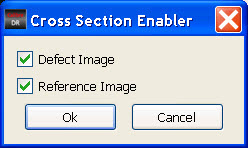

For Fixed Mode,
when performing Cross Section Analysis in Fixed Mode, you must first
configure the images using the Cross Section Enabler. The Cross Section
Enabler is not available in Free Mode.
Procedure
- Click the Cross Section Enabler
button in the IMU window toolbar.
Figure 1. Cross Section Enabler Button
- The Cross Section Enabler
dialog box appears.
Figure 2. Cross Section Enabler
Dialog Box
- In the Cross Section Enabler
dialog box, select the images on which you want to see the Cross
Section and click Ok.
- Click the Display Cross Section
Bar button in the IMU window toolbar. The cross section is computed
on images that are selected using the cross section enabler.